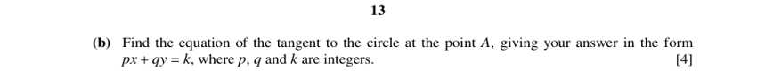
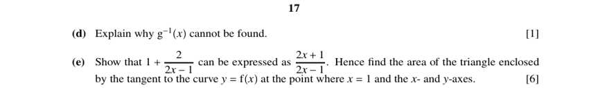

Question 4 [2 + 3]

Original paper page 5
(a) [2] The first, second and third terms of an AP are k, 6k and k + 6. Find k.
6k − k = (k + 6) − 6k so 5k = 6 − 5k so 10k = 6
k = 0.6
(b) [3] Find the sum of the first 30 terms.
d = 3, S₃₀ = 15(2(0.6) + 29(3)) = 15(88.2)
S₃₀ = 1323
Question 5 [4 + 5]

Original paper page 6
(a) [4] Curve y = 4x² − kx + ½k², line y = x − a. They meet at x = 0 and x = ¾. Find k and a.
At x = 0: ½k² = −a so a = −½k²
At x = ¾: 9/4 − ¾k + ½k² = ¾ − a = ¾ + ½k² so ¾k = 3/2 so k = 2
a = −½(4) = −2
k = 2, a = −2
(b) [5] Given a = −7/2, find the values of k for which the line is a tangent to the curve.
4x² − kx + ½k² = x + 7/2
4x² − (k + 1)x + (½k² − 7/2) = 0
Discriminant = 0: (k + 1)² − 16(½k² − 7/2) = 0 so 7k² − 2k − 57 = 0
(k − 3)(7k + 19) = 0
k = 3 or k = −19/7
Question 7 [2 + 4]

Original paper page 10
(a) [2] Sector OBAC, radius 10 cm, angle AOC = π/6, arc AB = 2 cm. Find angle BOC.
Angle AOB = arc/radius = 2/10 = 0.2
Angle BOC = π/6 + 0.2 = (5π + 6)/30 ≈ 0.724 rad
∠BOC = (5π + 6)/30 rad (about 41.5°)
(b) [4] Find the area of the shaded region BPC, to 3 significant figures.
BP = 10 sin(0.724) = 6.621, OP = 10 cos(0.724) = 7.494
Triangle OBP = ½(7.494)(6.621) = 24.81
Sector OBC = ½(100)(0.724) = 36.18
Region BPC = 36.18 − 24.81
Area ≈ 11.4 cm²
Question 8 [4 + 4]

Original paper page 12

Original paper page 13
(a) [4] Circle x² + y² + ax + by − 12 = 0 passes through A(1, 1) and B(2, −6). Find a and b, and the centre.
A: 2 + a + b − 12 = 0 so a + b = 10
B: 4 + 36 + 2a − 6b − 12 = 0 so a − 3b = −14
Solving: a = 4, b = 6
Centre = (−a/2, −b/2)
a = 4, b = 6; centre (−2, −3)
(b) [4] Find the tangent to the circle at A, in the form px + qy = k.
Gradient CA = (1 + 3)/(1 + 2) = 4/3, so tangent gradient = −3/4
y − 1 = −¾(x − 1) so 4y − 4 = −3x + 3
3x + 4y = 7
Question 9 [3 + 4]

Original paper page 14
(a) [3] Curve y = 3x + 1 − 4(3x + 1)^½ for x > −⅓. Find dy/dx and d²y/dx².
dy/dx = 3 − 6(3x + 1)^(−½)
d²y/dx² = 9(3x + 1)^(−3/2)
dy/dx = 3 − 6(3x+1)^(−½), d²y/dx² = 9(3x+1)^(−3/2)
(b) [4] Find the coordinates of the stationary point and determine its nature.
dy/dx = 0: (3x + 1)^½ = 2 so 3x + 1 = 4 so x = 1
y = 4 − 4(2) = −4
d²y/dx² at x = 1: 9(4)^(−3/2) = 9/8 > 0
(1, −4), minimum point
Question 10 [1 + 3 + 2 + 1 + 6]

Original paper page 16

Original paper page 17
f(x) = (2x + 1)/(2x − 1), x ≠ ½. g(x) = x² + 4, x ∈ ℝ. (a) [1] State the domain of f⁻¹.
f(x) = 1 + 2/(2x − 1) never equals 1, so the range of f is all reals except 1
Domain of f⁻¹: x ≠ 1
(b) [3] Find f⁻¹(x).
y(2x − 1) = 2x + 1 so 2x(y − 1) = y + 1 so x = (y + 1)/(2(y − 1))
f⁻¹(x) = (x + 1)/(2(x − 1))
(c) [2] Find gf⁻¹(3).
f⁻¹(3) = 4/4 = 1, g(1) = 1 + 4
5
(d) [1] Explain why g⁻¹(x) cannot be found.
g(x) = x² + 4 for all real x is not one-to-one (for example g(2) = g(−2)).
(e) [6] Show that f(x) = 1 + 2/(2x − 1). Hence find the area of the triangle enclosed by the tangent to y = f(x) at x = 1 and the axes.
(2x + 1)/(2x − 1) = (2x − 1 + 2)/(2x − 1) = 1 + 2/(2x − 1)
f′(x) = −4/(2x − 1)²; at x = 1: f(1) = 3, f′(1) = −4
Tangent: y − 3 = −4(x − 1) so y = −4x + 7
Intercepts: x = 7/4 and y = 7
Area = ½ × (7/4) × 7
Area = 49/8
Question 11 [5 + 5]

Original paper page 18
(a) [5] f(x) = 4cos⁴x + cos²x − k for 0 ≤ x ≤ 2π, k = 3. Solve f(x) = 0 exactly.
Let u = cos²x: 4u² + u − 3 = 0 → (4u − 3)(u + 1) = 0
u = −1 is rejected (u ≥ 0), so cos²x = ¾, cos x = ±√3/2
x = π/6, 5π/6, 7π/6, 11π/6
(b) [5] Use the quadratic formula to show that, when k > 5, f(x) = 0 has no solutions.
u = (−1 ± √(1 + 16k))/8
For k > 5: √(1 + 16k) > 9, so u₊ > 1 (impossible, since u = cos²x ≤ 1)
u₋ < 0 (impossible, since u ≥ 0)
No solutions when k > 5